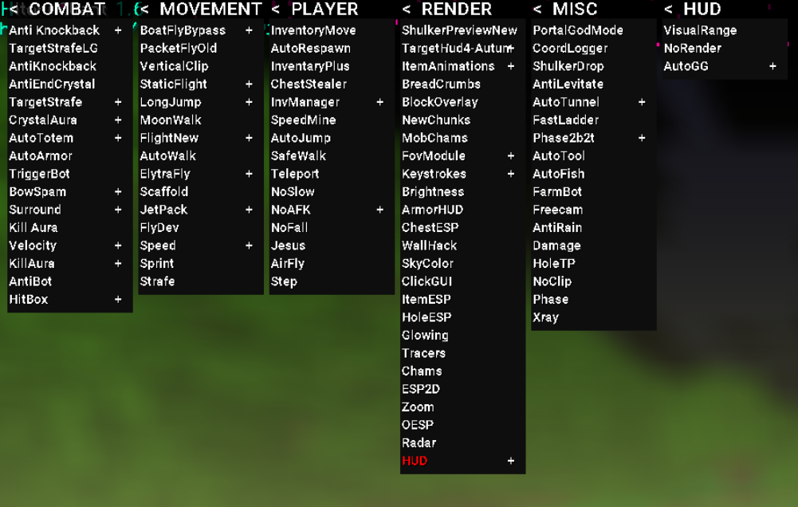

Hitori Client Interface
The Hitori Client interface is designed to be simple, clean, and easy to use.
CrystalAura works on almost all anarchy servers, making Hitori Client a useful utility for players across different servers.
The Hitori Client interface is designed to be simple, clean, and easy to use.
CrystalAura works on almost all anarchy servers, making Hitori Client a useful utility for players across different servers.
Hitori Client provides functions similar to those found in other Minecraft clients while focusing on providing useful features at a low price.

We support anarchy servers and have put a lot of work into developing and improving Hitori Client.
More features and improvements may be added as development continues.